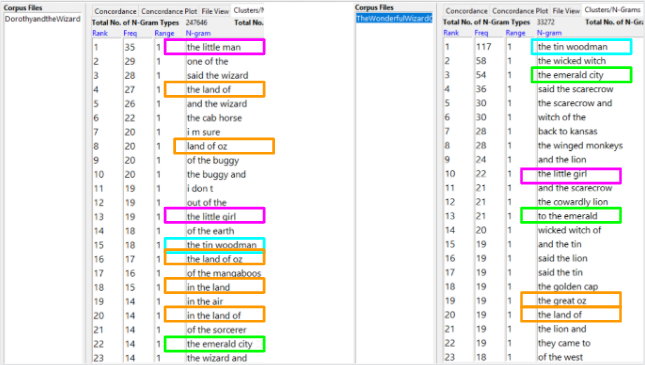
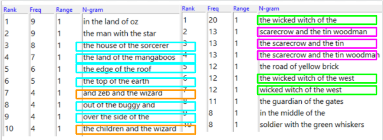

For my corpus analysis assignment I chose to compare two books in the 14 book series about the Land of Oz. I used the first book, The Wonderful Wizard of Oz, as well as the fourth book, Dorothy and the Wizard in Oz.
While initially it may seem like an odd choice to pick the fourth book over the second, I did it for a good reason. The second and third books in the series have different main characters, and I'm sure it still would have been interesting to compare the descriptions of Oz in them, but for this project, I wanted to use books that had overlapping characters as well. I think it gave me some pretty interesting results.
I started on Voyant and entered both texts separately. I immediately noticed that the word clouds contained a lot of the same words. As you can see below, "Dorothy" and "said" are two of the largest, and thus most frequent, words in both of the books. And those aren't the only words the book has in common. You will notice that the books both also contain: "good," "big," "little," "just," "eyes," "asked," "like," "came," and "answered." While it doesn't seem like these are especially interesting words themselves, I do think it was cool to notice that they are frequently used in both books. A bit of an odd thing I noticed was that, despite having the book named after him, the Wizard is not among the most frequent words in The Wonderful Wizard of Oz. Now I know that the Wizard doesn't actually appear in the story until closer to the end, but I thought that he would have at least been mentioned enough for "wizard" to be in the word cloud.
The next thing I looked at on Voyant was the summary section. This section gives the total words, unique word forms, average words per sentence, and the counts for the five most frequent words in the text. The summary sections show that Dorothy and the Wizard in Oz has more total words and unique words than the first book. However, the first book has a higher average of words per sentence. You can also see here the top five words and the counts for them. The first book has higher counts for the most frequent words than the fourth book does. Also, "Dorothy" appears more often than "said" in the first book, which goes to show how important she is as the main character. I would also like to note that four of the top five words for book one are the four main characters of the book. Similarly, three of the top five words for the fourth book are main characters.
The last thing I looked at on Voyant was the frequency distribution for the top five words. It was interesting to look at this and try to analyze why certain parts of the books had words/names appearing more often. Personally, I only know the first story, so it was easy to try to infer what was happening at each point, but my analysis of the fourth book had to be a little vaguer. For example, in the first book's graph Dorothy starts at the very top, and you can see that at a certain point in the book a different character peaks. I believe that at the peak is where the character first shows up. Dorothy interacts with the characters the most when she first meets them. Then in the fifth section, it appears that Dorothy was separated from the other characters, as she remains higher up and they drop very low. From that point, they remain pretty low on the graph while Dorothy and "said" stay higher. In the fourth book's graph, Dorothy does not start as high up. In fact, she remains closer to the middle of the distribution for most of the story. The Wizard peaks in sections two and three, so this is likely when he is introduced. After his initial peak, all of the words seem to stay close together until section nine. Section nine is interesting in that Dorothy drops down very low and then builds back up into section ten. Jim does the complete opposite, he peaks and then drops back down for section ten. This leads me to believe that Jim was an important part of building up the ending but wasn't very present in the actual end of the book.
Next, I moved to AntConc to analyze the engrams in the books. I started with the length being set at three and I captured the top twenty-three results. As you can see below, I then highlighted ones that were similar between the two books. The most common one in both books were different phrasings of "in the land of Oz." Note that similar to the frequent words I covered previously, The Wonderful Wizard of Oz has a lot more frequently occurring engrams. The top result occurring a hundred and seventeen times, while the top result from Dorothy and the Wizard in Oz only occurs thirty-five times.

The last thing I did was to change the length to five. I stopped at five because past that there were no longer any interesting phrases that occurred more than a handful of times. As my pictures show, there weren't any similarities between the two texts this time, however, I highlighted the repeated phrases within each text. In the first book the most repetitive ones were phrases about the wicked witch and phrases about the scarecrow and the tin man. In the fourth book I highlighted the two instances where it said "_ and the wizard." The most repetitive trend I saw was "_ of the _." Maybe this means nothing, but as someone who used to write my own stories and enjoys reading books, I see repetitive phrases like this and can't help but think that the author got a little lazy with their wording. Which when you think about the fact that this book series contains fourteen books, I suppose it makes sense that his creativity would die down after a while.

This concludes my comparison of The Wonderful Wizard of Oz (book 1) and Dorothy and the Wizard in Oz (book 4). I hope that my findings and analysis of them were interesting to you and perhaps even sparked some ideas for further comparisons of this book series.